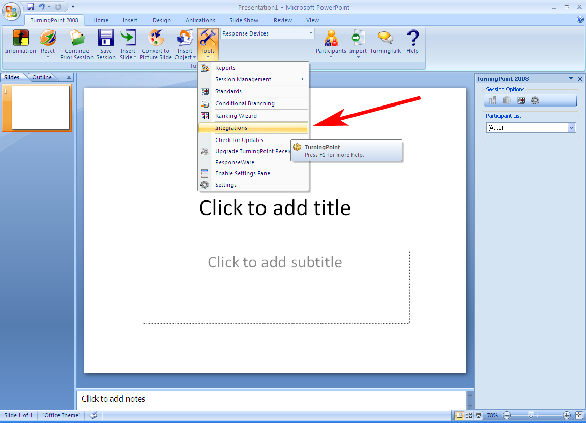
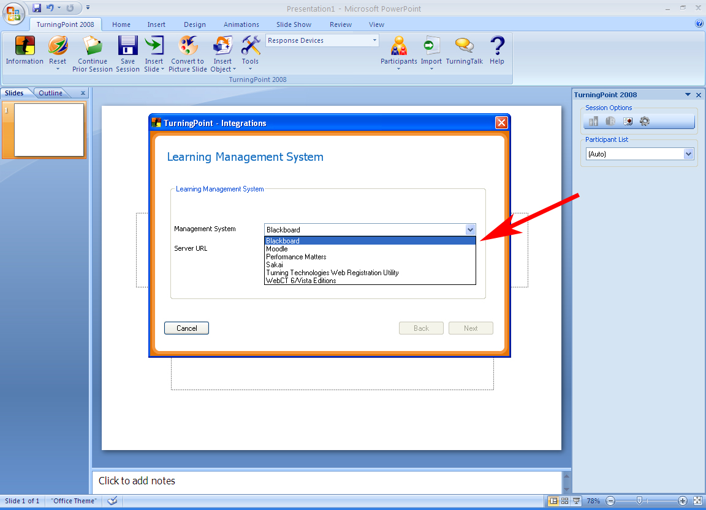
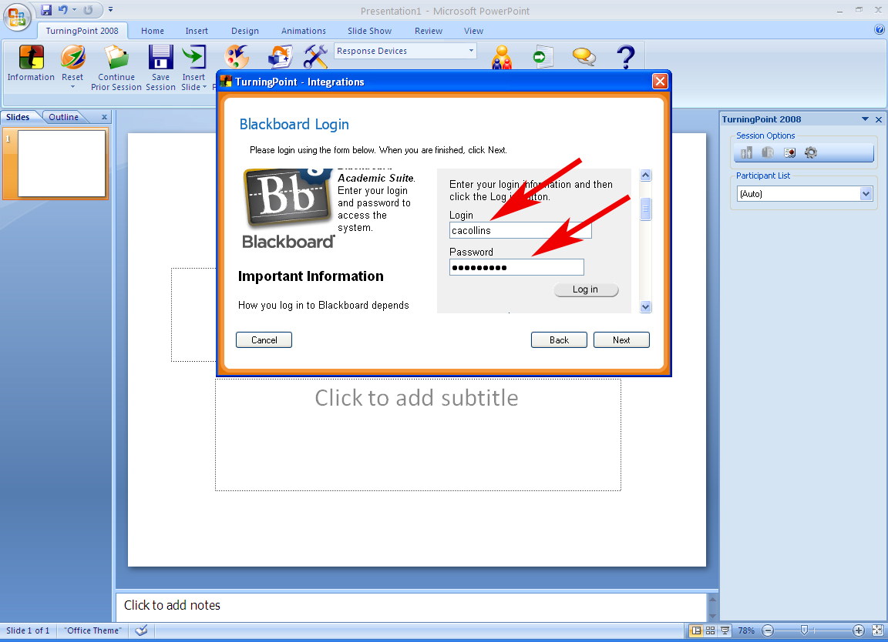
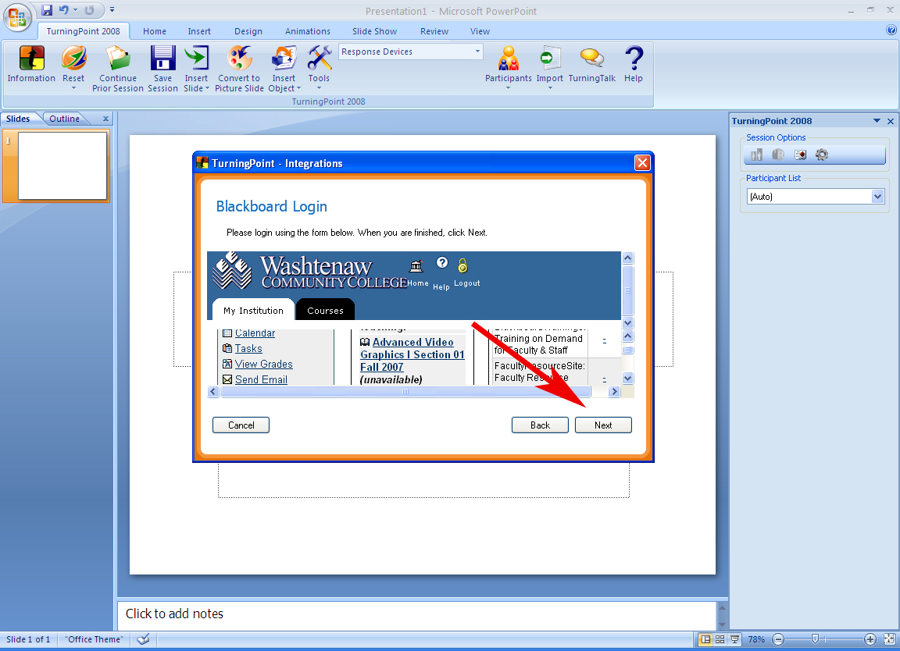
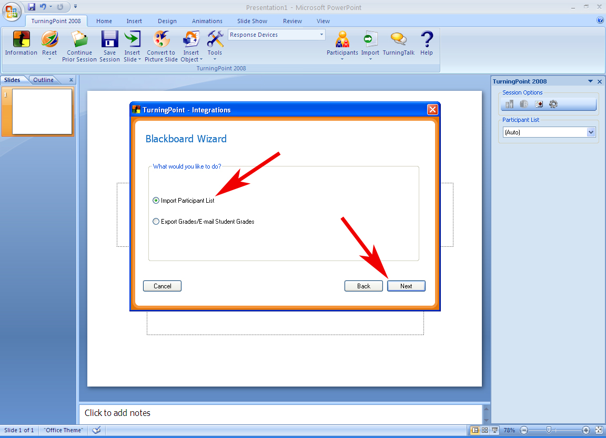
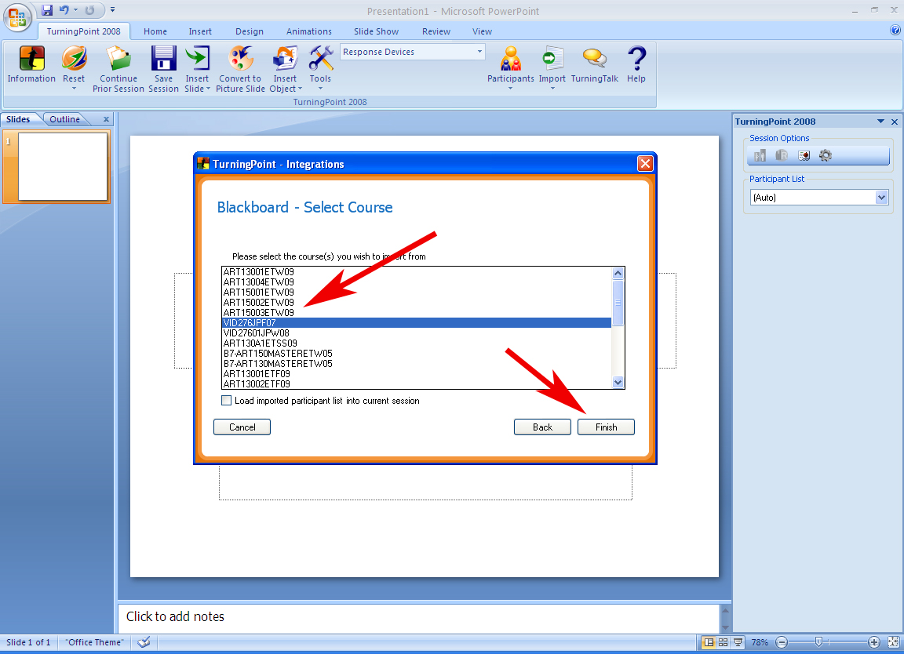
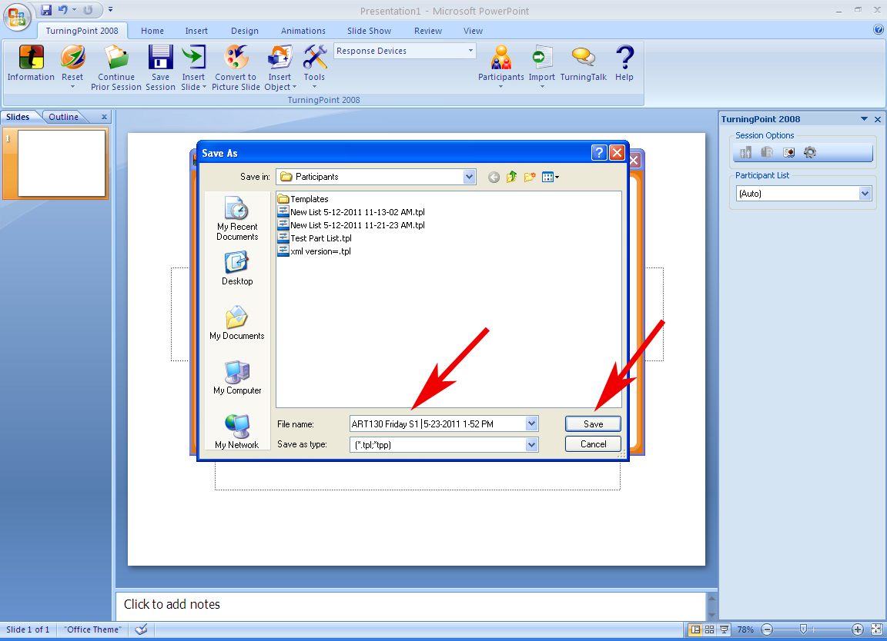

Create a Participant List:
TurningPoint includes a feature called “Integrations” that allows you to import and export information to WCC’s Blackboard Server. The Integrations feature allows an Instructor to download accurate Participant Lists from Blackboard class rosters. It is possible to generate and import accurate class rosters from your courses in Blackboard and use them as Participant Lists within your TurningPoint presentations.
The Student Purchased Clickers Model has greatly simplified the creation of Participant Lists. Instructors are no longer required to edit their downloaded class rosters. After downloading, Participant lists are complete with Device IDs included. New participant Lists can be down loaded on a daily basis to ensure their accuracy.
How to Import a Participant List from Blackboard
- From the “TurningPoint 2008” tab, click on the “Tools” drop-down menu and select “Integrations”.
- From the “TurningPoint – Integrations” window, locate the “Management System” drop-down list and select “Blackboard”.
- In the Server URL enter the location of WCC’s Blackboard server (blackboard9.wccnet.edu) and click the “Next” button.

- Enter your Blackboard username and password and press Enter. You can enter a check mark in the “Save this information for future use” box if you wish. Click “Next”.
- The Blackboard log in screen will appear. Log in as you normally would and click next.
- The “Blackboard Wizard” window will open. You will have the option of choosing to “Import Participant List” or “Export Grades/Email Student Grades”. Select Import Participant List and click “Next”.
- The “Blackboard - Select Course” window will appear displaying the courses in which you are listed as an Instructor. Select the course that you would like to import a Participant List from and click “Finish”.
- TurningPoint will then prompt you to save the Participant List within the My_Documents/TurningPoint/Participants folder. Click “Save”. The Participant List is now saved to your computer and can be used by TurningPoint to record Session Data. You can use this Participant List file for all your presentations within a section without having to repeat these steps. You will only have to update the Participant List if there are roster changes to your course section.